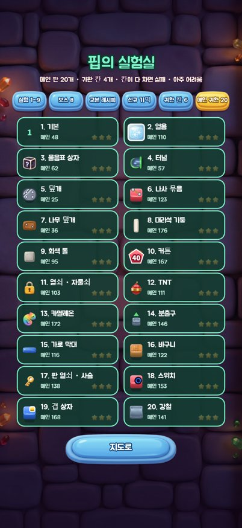
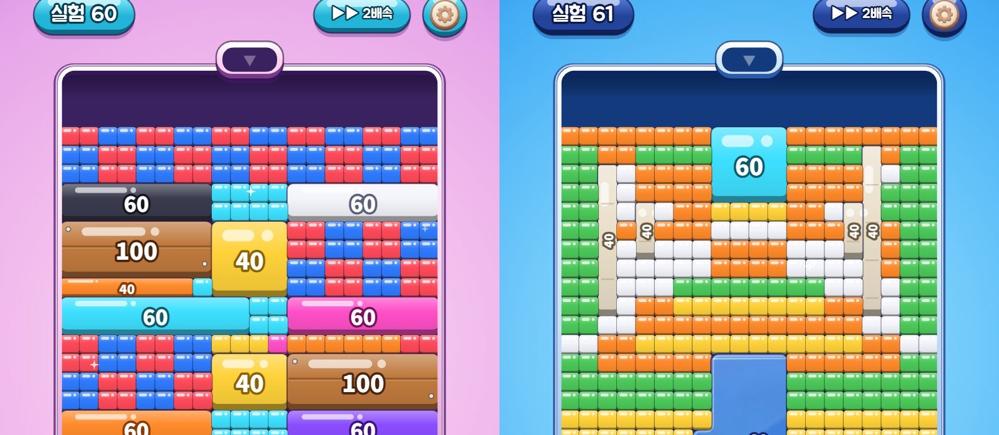
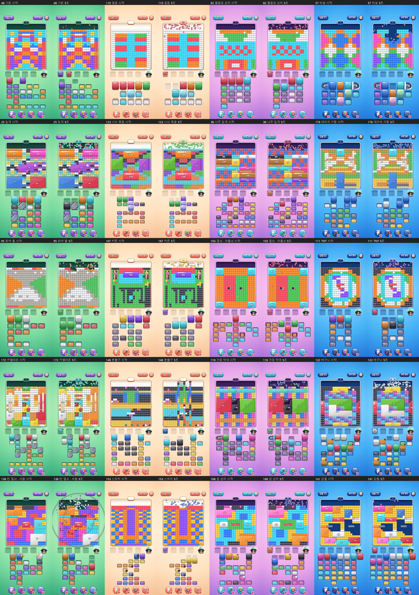

메인 귀환 20 (v18.6)
실험실 → 「메인 귀환 20」 탭. 메인 200판은 그대로(용량 규칙)이고, 여기 20판만 귀환 칸 4개 규칙이에요.
규칙
- 귀환 칸 4개. 젤리가 상자로 돌아와 칸이 다 차면 실패해요(용량 게이지는 없어요).
- 수명: 같은 색 광석이 하나도 안 보여도 젤리는 그 시간만큼 챔버에 머물러요. 그사이 다른 젤리가 길을 열면 살아요(판마다 1.5~3초, 덮개 판만 5초).
- 합침은 판마다 달라요(게임 위쪽과 실험실 카드에 표시). 켠 판은 같은 색이 한 칸에 계속 쌓이고, 끈 판은 상자마다 칸을 하나씩 써요.
- 나무 덮개 · 대리석 · TNT는 아무 색 젤리나 먹어요. 드러나 있으면 어느 색 젤리든 목표가 있어서 수명이 줄지 않아요. 제 색 광석이 다 없어진 젤리는 칸에 앉지 않고 그냥 사라져요.
- “보인다”는 젤리가 실제로 갈 수 있는 곳만 쳐요. 분출 기둥이 챔버를 가르면 건너편은 안 보이는 걸로 봐요.
20판 · 검증(튜닝에 안 쓴 시드)
| # | 기믹 | 메인 | 수명 | 합침 | 색 | 상자 | 풀림 | 실수 봇 승률 | 칸 4개 다 참 |
|---|---|---|---|---|---|---|---|---|---|
| 1 | 기본 | 48 | 1.5초 | 켬 | 7 | 24 | 100% | 29% | 79% |
| 2 | 얼음 | 110 | 2초 | 끔 | 5 | 13 | 100% | 38% | 67% |
| 3 | 물음표 상자 | 62 | 2초 | 끔 | 5 | 17 | 100% | 42% | 71% |
| 4 | 터널 | 57 | 3초 | 끔 | 7 | 20 | 100% | 67% | 58% |
| 5 | 덮개 | 25 | 5초 | 켬 | 9 | 19 | 100% | 58% | 75% |
| 6 | 나사 묶음 | 123 | 3초 | 켬 | 6 | 22 | 100% | 8% | 33% |
| 7 | 나무 덮개 | 36 | 2초 | 켬 | 9 | 37 | 100% | 38% | 88% |
| 8 | 대리석 기둥 | 176 | 3초 | 끔 | 6 | 22 | 92% | 13% | 92% |
| 9 | 회색 돌 | 95 | 2초 | 끔 | 4 | 15 | 92% | 42% | 67% |
| 10 | 커튼 | 167 | 2초 | 끔 | 6 | 18 | 100% | 33% | 88% |
| 11 | 열쇠 · 자물쇠 | 103 | 2초 | 끔 | 4 | 22 | 100% | 71% | 46% |
| 12 | TNT | 111 | 2초 | 끔 | 7 | 13 | 100% | 50% | 71% |
| 13 | 카멜레온 | 172 | 2초 | 끔 | 6 | 26 | 100% | 13% | 100% |
| 14 | 분출구 | 146 | 2초 | 켬 | 10 | 26 | 58% | 67% | 54% |
| 15 | 가로 막대 | 116 | 2초 | 켬 | 8 | 29 | 100% | 29% | 54% |
| 16 | 바구니 | 122 | 2초 | 켬 | 8 | 30 | 100% | 29% | 88% |
| 17 | 판 열쇠 · 사슬 | 138 | 2초 | 켬 | 9 | 19 | 100% | 42% | 88% |
| 18 | 스위치 | 153 | 2초 | 끔 | 5 | 21 | 100% | 21% | 96% |
| 19 | 겹 상자 | 168 | 2초 | 켬 | 9 | 23 | 100% | 21% | 100% |
| 20 | 강철 | 141 | 1.5초 | 끔 | 9 | 33 | 100% | 46% | 75% |
풀림 = 같은 시드에서 실수 없는 봇이나 실수 봇 둘 중 하나라도 깬 비율(12판). 실수 봇 = 30% 판단 실수(24판). 평균 승률은 38%예요(메인 목표 평균은 59%).
실험실 탭

나무 · 대리석 클레이

20판 시작 · 5초 뒤
